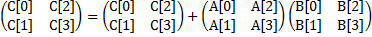

Setup
Copy the directory ~cs61c/labs/09 to an appropriate location in your home directory.
mkdir ~/lab09
cp -r ~cs61c/labs/09/* ~/lab09/
Note that all code using SSE instructions are only guaranteed to work on the hive machines. Many newer processors support the SSE intrinsics, so it is certainly possible that your machine will be sufficient for this, especially if it is recent, but no guarantees on this.
Exercises
Exercise 1: Familiarize Yourself
Given the large number of available SIMD intrinsics we want you to learn how to find the ones that you'll need in your application.
Here is a way to find the necessary information:
- Go to Intel's website. This can also be found by searching for "Intel Intrinsics Guide."
- Under the "Getting Started" tab on the left, download the appropriate copy of the Intel Intrinsic Guide.
Do your best to interpret the new syntax and terminology. Find the 128-bit intrinsics for the following SIMD operations (one for each):
- Four floating point divisions in single precision (i.e. float)
- Sixteen max operations over signed 8-bit integers (i.e. char)
- Arithmetic shift right of eight signed 16-bit integers (i.e. short)
Checkoff
- Record these intrinsics in a text file to show your GSI.
Exercise 2: Reading SIMD Code
In this exercise you will consider the vectorization of 2-by-2 matrix multiplication in double precision:

This accounts to the following arithmetic operations:
C[0] += A[0]*B[0] + A[2]*B[1];
C[1] += A[1]*B[0] + A[3]*B[1];
C[2] += A[0]*B[2] + A[2]*B[3];
C[3] += A[1]*B[2] + A[3]*B[3];
You are given the code sseTest.c that implements these operations in a SIMD manner.
The following intrinsics are used:
| __m128d _mm_loadu_pd( double *p ) | returns vector (p[0], p[1]) |
| __m128d _mm_load1_pd( double *p ) | returns vector (p[0], p[0]) |
| __m128d _mm_add_pd( __m128d a, __m128d b ) | returns vector (a0+b0, a1+b1) |
| __m128d _mm_mul_pd( __m128d a, __m128d b ) | returns vector (a0b0, a1b1) |
| void _mm_storeu_pd( double *p, __m128d a ) | stores p[0]=a0, p[1]=a1 |
Compile sseTest.c into x86 assembly by running:
make sseTest.s
Find the for-loop in sseTest.s and identify what each intrinsic is compiled into. Does the loop actually exist? Comment the loop so that your TA can see that you understand the code.
Checkoff
- Show your commented code to your TA and explain the for-loop.
Exercise 3: Writing SIMD Code
For Exercise 3, you will vectorize/SIMDize the following code to achieve approximately 4x speedup over the naive implementation shown here:
static int sum_naive(int n, int *a)
{
int sum = 0;
for (int i = 0; i < n; i++)
{
sum += a[i];
}
return sum;
}
You might find the following intrinsics useful:
| __m128i _mm_setzero_si128( ) | returns 128-bit zero vector |
| __m128i _mm_loadu_si128( __m128i *p ) | returns 128-bit vector stored at pointer p |
| __m128i _mm_add_epi32( __m128i a, __m128i b ) | returns vector (a0+b0, a1+b1, a2+b2, a3+b3) |
| void _mm_storeu_si128( __m128i *p, __m128i a ) | stores 128-bit vector a at pointer p |
Start with sum.c. Use SSE instrinsics to implement the sum_vectorized() function.
To compile your code, run the following command:
make sum
Checkoff
- Show your TA your working code and performance improvement.
Exercise 4: Loop Unrolling
Happily, you can obtain even more performance improvement! Carefully unroll the SIMD vector sum code that you created in the previous exercise. This should get you about a factor of 2 further increase in performance. As an example of loop unrolling, consider the supplied function sum_unrolled():
static int sum_unrolled(int n, int *a) { int sum = 0; // unrolled loop for (int i = 0; i < n / 4 * 4; i += 4) { sum += a[i+0]; sum += a[i+1]; sum += a[i+2]; sum += a[i+3]; } // tail case for (int i = n / 4 * 4; i < n; i++) { sum += a[i]; } return sum; }
Also, feel free to check out Wikipedia's article on loop unrolling for more information.
Within sum.c, copy your sum_vectorized() code into sum_vectorized_unrolled() and unroll it four times.
To compile your code, run the following command:
make sum
Checkoff:
- Show your TA the unrolled implementation and performance improvement.